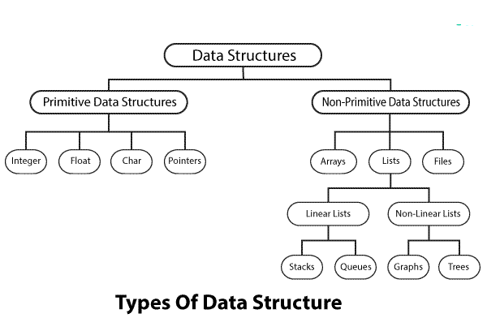

1.Define Data structures? Explain the characteristics and uses of data structures?
Ans. A data structre is a way of organising and storing data in a computer so that it can be accessed and used efficently.
Data strucutre is desgined to organise data to suit a specific purpose so that it can be accesed and worked within appropriate ways
It refers to the logical or mathematical representation of data, as well as the implementation in a computer program
Example:-
Queues: A linear data structure that follows the FIFO order
Important characteristics of data structre are;-
Correctness-Data structre implemntation should implement its interface correctly
Time Complexity-
Running time or the the execution time of operation of data structre must be as small as possible
Space Complexity-Memory usage of data structre operation should be as little as possible
Uses Of Data Structre are:-
Data structre is used in almost every program or software system
It helps to write efficent code, structres the code and solve problem
Data can be maintained more easily by encouraging a better desgin or implementation
Data structre is just a container for the data that is used to store, manipulate and arrange.It can be processed by algorithms
2.Explain the types of datastructures?
Ans.Data Structure are grouped into two main categories: primitve and non-primitive

Primitve Data Structure: Primtive data structures are the basic data structres that directly operate the machine instructions
It is a basic data structre which is avaialable in most of the programming languages. it includes integer, float, char and boolean
Non-Primitive Data Structure: Non-primitve data structures are more complicated data structures and are derived from primitive data structre.
Non primitive data structure can be divided into two types:-
Linear data structure
Non Linear data structure
Linear data structure: Linear data structure traverses the data elements sequentially.
In linear data structure only one data element can be reached directly it includes arrays, linked list, stack and queue
Array:
An array is a data structure that stores a collection of items in a contiguous block of memory
Arrays are indexed, meaning that each item in the array has a unique index that can be used to access it
Linked list:A linked list is a data structure that stores a collection of items in a non-contiguous block of memory.
Each item in a linked list contains a pointer to the next item in the list.
Stack: A stack is a data structure that stores a collection of items in a LIFO (last in, first out) order
QueueA queue is a data structure that stores a collection of items in a FIFO (first in, first out) order.
Non-linear data structure: In non-linear data structure, the data values are not arranged in order and data item is connected to several other data times
free contiguous memory is not required for allocating data items
it includes trees and graphs
Tree:: A tree is a data structure that stores a collection of items in a hierarchical order.
Each item in a tree has a parent item and zero or more child items
Graph: A graph is a data structure that stores a collection of items and the relationships between them
Graphs are efficient for storing and accessing data that is interconnected.
3.Define Array? Explain various types of array in detail?
Ans. An array is a data structure that stores a collection of items. It is used to store a collection of data, such as a list of numbers, names, or objects.
Arrays are often used to represent data that is related to each other, such as the items in a shopping cart or the students in a class.
The following types of arrays are:
One dimensonal array:A one-dimensional array is the simplest type of array. It is a list of items that are stored in a single row
One-dimensional arrays are often used to store lists of numbers, names, or objects.
Two-dimensional arrays:A two-dimensional array is a list of lists. It is a table of items that are stored in rows and columns.
Two-dimensional arrays are often used to store tables of data, such as a spreadsheet or a database table
Multi-dimensional arrays:A multi-dimensional array is an array that has more than two dimensions.
Multi-dimensional arrays are often used to store complex data structures, such as a video game map or a 3D model.
4.Explain the advantages and disadvantages of arrays?
Ans.
Advantages of arrays are
In an array, accessing an element is very easy by using the index number.
Arrays can be used to represent strings, stacks and queues
Arrays are memory-efficient, as they store data in contiguous memory locations. This makes them easy to manipulate and efficient to use.
Arrays are well known in applications such as searching, matrix operations and sorting
For any reason a user wishes to store multiple values of similar type then the Array can be used and utilized efficiently.
Disadvantages of array
Fixed-size. The size of an array is fixed. Once the size is declared, it cannot be changed. ...
Lack of flexibility. Arrays are not very flexible as they have a fixed size
Overhead. When working with arrays, an overhead is involved in terms of time and memory.